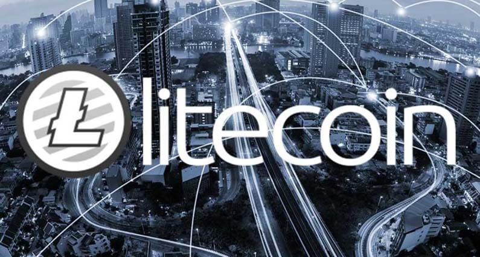
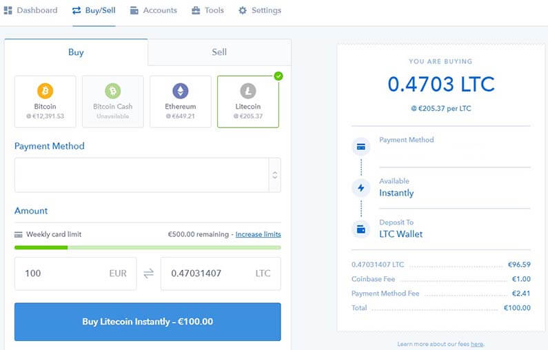
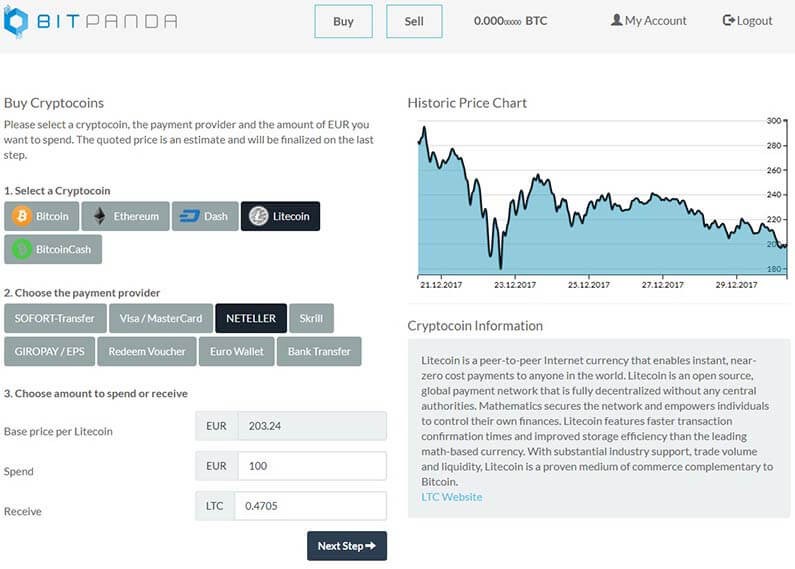

Mi az a Litecoin? - Útmutató kezdőknek
Legtöbben Litecoin-t (LTC), Bitcoin kistestvéreként emlegetik. Mondhatnánk ha Bitcoin célja, hogy egyfajta digitális arany legyen, akkor Litecoin célja, hogy az ehhez járó digitális ezüst legyen.
Ahogy egyre népszerűbbek lesznek a kriptopénzek, az emberek befektetési lehetőség után kutatva Bitcoin helyett Litecoin-t választják. Ez meg is látszik a Litecoin árnövekedésén. 2017-ben amíg Bitcoin tiszteletre méltó 1332%-os növekedést produkált addig Litecoin 4866%-ot.
Mi az a Litecoin?
Litecoin-t egy volt Google alkalmazott Charlie Lee hozta létre 2011-ben. Gyakorlatilag a Bitcoin egy leágazásaként. Bitcoin-hoz hasonlóan, Litecoin is blokklánc technológiát használ. Ugyanúgy decentralizált fizetőeszköz, amit bányászattal állítanak elő.
Szóval mi a különbség? Egy blokk feldolgozása 2 és fél percbe telik, Bitcoin 10 percével ellentétben. Ez sokkal gyorsabb tranzakciókat enged meg. Bitcoin véges 21 millió darabjával szemben Litecoin-ból 84 millió lehet összesen.
Az ok amiért csak limitált számban elérhetőek ezek a valuták az egyik legöregebb elv a gazdaságban: Kereslet és kínálat.
Ha kevesebb a kínálat egy értéktárgyból, nagyobb az értéke. Ezzel szemben, ha egy eszköz határtalan mennyiségben áll rendelkezésre, az nagyban csökkenti értékét.
Ezért fontos, hogy limitált darabban elérhetőek ezek a kriptovaluták.
Sebesség:
Tranzakció visszaigazolás sebessége nagyon fontos egy valuta használhatóságáért. Bitcoin visszaigazolása általában 10 perc és folyamatosan növekszik, a népszerűségével arányosan. A Litecoin hálózat 2,5 percenként készít egy új blokkot, így sokkal gyorsabban képes tranzakciókat visszaigazolni.
Költség:
Litecoin tranzakciós díjai centekbe kerül, míg Bitcoin-é folyamatosan növekszik. Litecoin-nak a gyors és olcsó tranzakciókkal nagyobb potenciálja van a mindennapi életben, mint nagy testvérének.
Ehhez azonban hozzátartozik, hogy nem használják annyian Litecoin-t, mint Bitcoin-t. Elméletben, ha nagyon sokan kezdik majd el használni Litecoin-t, akkor hasonló problémákkal nézhet szembe a jövőben. Litecoin azonban, nagyon adaptív új technológiákkal szemben, ők voltak az elsők akik bevezették az úgynevezett Segwit technológiát amely gyorsabb és olcsóbb tranzakciókat biztosítanak.
Fontos megjegyezni, a különbségeket ezen kriptopénzek alapításuk kapcsán is. Bitcoin alapítóját (alapítóit) teljes homály fedi. Senki nem tudja, hogy kicsoda Satoshi Nakamoto. Lényegében, csak egy legenda.
Litecoin alapítója, viszont nyilvánosan elérhető. Charlie Lee aktív Twitteren @SatoshiLite néven. Miután elhagyta Google-t, mérnökként dolgozott Coinbase-nél ami manapság az egyik legnagyobb és legnépszerűbb kriptopénz váltó.
Bányászat:
Bitcoin bányászat hatalmas erőforrást igényel. Jelenleg közel annyi elektromosságot fogyaszt mint teljes Dánia! Ezért bányászok csoportokba egyesültek, hogy így csökkentség költségeiket. Ez azonban rontja Bitcoin decentralizáltságát. Manapság átlag emberként majdnem lehetetlen Bitcoin-t bányászni.
Litecoin ezt kiküszöbölve jött létre, tehát nem teszi lehetővé, hogy bányász csoportok alakuljanak ki. Ezáltal a hálózat decentralizáltabb marad. Sokkal kisebb befektetéssel lehet elkezdeni a bányászatot.
Litecoin tárolása
Electrum tárca egy jó egyensúlyt ajánl a könnyű használat és gazdag funkciók között. De ott van még Jaxx és Exodus amelyek szintén támogatják Litecoint-t.
A két legjobb hardver tárca is támogatja Ethereum-ot. Ledger Nano S és Trezor.
Bővebb ismertetőt Litecoin tárolásával kapcsolatban a tárcák menüpont alatt találsz.
Litecoin vásárlása
Legegyszerűbb módja a Litecoin (LTC) vásárlásnak a népszerű kriptopénz váltók. Ezeken a weboldalakon hagyományos valutádat (általában USD vagy EUR) válthatod kriptopénzre.
Mire kell figyelni mielőtt csatlakozunk egy ilyen weboldalhoz:
- Megbízhatóság
- Díjak
- Fizetési opciók
- Verifikáció követelmények
- Földrajzi megkötések
- Váltási árfolyam
Kezdőknek ajánlott kriptopénz váltók:
Coinbase
Coinbase az egyik legismertebb weboldal Litecoin vásárláshoz. A weboldal kezdőbarát, ami jelentősen megkönnyíti a kriptopénz beszerzését. A tranzakciós díjak tisztán látszanak a vásárlás folyamán, nincsenek elrejtett díjak.
Coinbase székhelye San Fransisco, USA-ban van, azonban fogadnak vásárlókat Magyarországról is. Banki SEPA utalással feltöltheted a Coinbase számládat. Általában 2-5 nap* alatt érkezik meg a pénz. Illetve lehet hitelkártyával is fizetni, de csak akkor ha rendelkezik 3D biztonsági kóddal.
Litecoin mellet lehetőséget biztosítanak Bitcoin, Ethereum és Bitcoin Cash vásárlásra is.
Elérhető nyelvek között szerepel Angol és Német.
*Mivel jelenleg ez a legnépszerűbb kriptopénz váltó a hatalmas forgalom miatt lehetnek akadozások, késések a ki- és befizetésben.
Itt regisztrálhatsz Coinbase-re!
BitPanda
BitPanda egy Ausztriában honos kriptopénz váltó. Ennél fogva teljes Európában használható, köztük Magyarországon is. Nagy előnye, hogy nagyon széles be- és kifizetési opciókat kínál. A weboldal kezdőbarát, nagyon egyszerűvé teszi a vásárlást. A tranzakciós díjakat nem külön jelzik hanem beleépítve az árba.
SEPA utalás, 3D biztonsági kóddal ellátott bankkártya mellett, lehet Skrill-t és Neteller-t is lehet használni. Ezeknek a tranzakció ideje pár másodperc.
Elérhető kriptopénzek Bitcoin, Ethereum, Dash, Litecoin és Bitcoin Cash.
Támogatott nyelvek Angol és Német.
Itt regisztrálhatsz BitPanda-ra!
Záró gondolatok
Az elmúlt évben Litecoin bizonyította, hogy képes kockázatot vállalni és megújulni. Folyamatosan fejlődnek és új technológiát alkalmaznak, hogy tovább javíthassák a tranzakció idejüket és költségeiket. Megmutatva, hogy igenis van potenciál van a kriptopénzekben.


2018. Január 05.